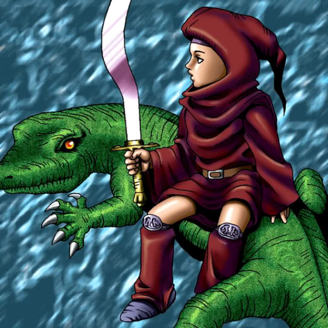

The Little Swordsman of Aile

STATS
ATK: 800
DEF: 1300DECK COST
Deck Cost per Card: 21Fusion List (19 Possible Fusions)
- The Little Swordsman of Aile + Abyss Flower = Bean Soldier
- The Little Swordsman of Aile + Ancient Jar = Minomushi Warrior
- The Little Swordsman of Aile + Armaill = Charubin the Fire Knight
- The Little Swordsman of Aile + Baby Dragon = D. Human
- The Little Swordsman of Aile + Blue-Eyed Silver Zombie = Zombie Warrior
- The Little Swordsman of Aile + Charubin the Fire Knight = Flame Swordsman
- The Little Swordsman of Aile + Dancing Elf = Celtic Guardian
- The Little Swordsman of Aile + Dark Plant = Bean Soldier
- The Little Swordsman of Aile + Darkworld Thorns = Bean Soldier
- The Little Swordsman of Aile + Fire Eye = Charubin the Fire Knight
- The Little Swordsman of Aile + Fusionist = Tiger Axe
- The Little Swordsman of Aile + Koumori Dragon = Sword Arm of Dragon
- The Little Swordsman of Aile + Little Chimera = Tiger Axe
- The Little Swordsman of Aile + Man-Eating Plant = Bean Soldier
- The Little Swordsman of Aile + Mushroom Man = Bean Soldier
- The Little Swordsman of Aile + One-Eyed Shield Dragon = Dragon Statue
- The Little Swordsman of Aile + Pot the Trick = Minomushi Warrior
- The Little Swordsman of Aile + Rainbow Flower = Bean Soldier
- The Little Swordsman of Aile + Sleeping Lion = Tiger Axe